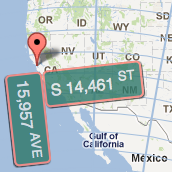
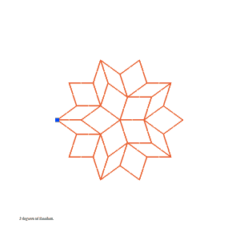

Coroutine Event Loops in Javascript discusses the use of coroutines for Javascript event-handling, as an interesting alternative to callbacks.
It includes a live demo contrasting coroutines and callbacks.
syzygy is an alignment of things, so presumably a syzygyst is someone who lines things up
Hello I am Harold Cooper and here are some of my digital artifacts. I also put stuff on Twitter and on GitHub and on SoundCloud and on Instagram.
Coroutine Event Loops in Javascript discusses the use of coroutines for Javascript event-handling, as an interesting alternative to callbacks.
It includes a live demo contrasting coroutines and callbacks.
One-line Tree in Python
is a frivolous use of the builtin defaultdict to implement a tree structure.
ExtendNY is an interactive map which extends the Manhattan Grid of streets and avenues to every point on Earth.

It received lots of feedback, including people around the world tweeting their "New York" addresses, many comparisons to View of the World from 9th Avenue, and was called "Infographic Of The Day" despite not really being an infographic.
I also gave a short talk about the project.
PCollections serves as a persistent and immutable analogue of the Java Collections Framework.
Spectra is a math poem thought experiment which asks the question "Is there a continuous surface made up of every continuous function?" and meanders towards the answer.
Mechanical Linkages in Python provides a graphical interface for simulating mechanical linkages, and describes the rigidity theory used to implement the simulator.

hungarian is a simple Python wrapper for a C++ implementation of Knuth's Hungarian algorithm, a.k.a. Munkres' algorithm, for solving the linear assignment problem.
pyLAPJV is a simple Python wrapper for a C++ implementation of the Jonker-Volgenant algorithm, LAPJV, for solving the linear assignment problem.